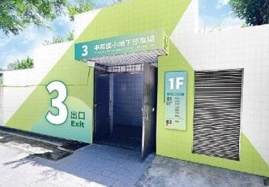
停車場經營
42 處停車場，
遍及北北桃基。
公有地下停車場、立體與平面停車場的委外經營。依縣市或經營公司篩選，點「地圖」查看位置。
共 42 處
照片準備中
福和國中地下停車場
照片準備中
土城中央公園地下停車場
照片準備中
鷺江立體停車場
照片準備中
新光國際金融中心地下停車場
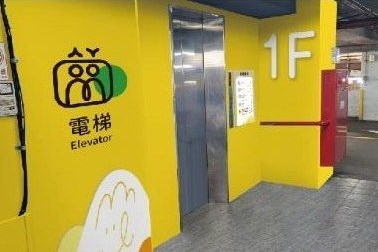
瑞芳立體停車場
照片準備中
瑞芳後火車站平面停車場
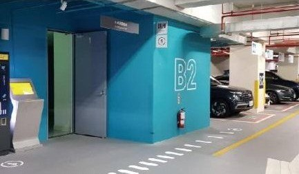
臺北流行音樂中心地下停車場
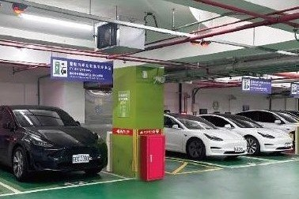
榮星花園地下停車場
照片準備中
濱江國中地下停車場
照片準備中
土城延吉立體停車場
照片準備中
土城裕生立體停車場
照片準備中
板橋高中地下停車場
照片準備中
臺北矽谷大樓地下停車場
照片準備中
光榮國小地下停車場
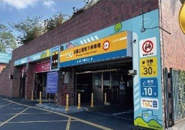
民權公園地下停車場
照片準備中
基隆港東三東四停車場
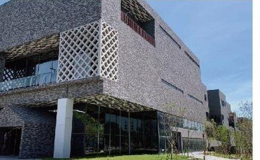
桃園國際原住民族文化創意產業園區地下停車場
照片準備中
秀峰段平面停車場
照片準備中
陽光段平面停車場
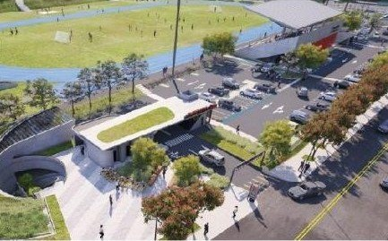
錦和運動公園地下停車場
照片準備中
錦和平面停車場
照片準備中
北區青少年活動中心地下停車場
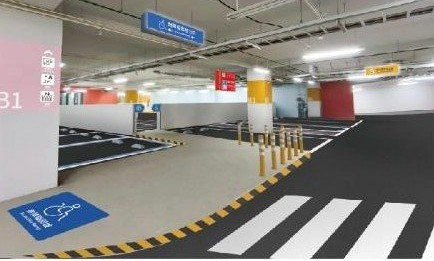
興榖國小操場地下停車場
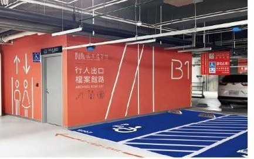
國家檔案館地下停車場
照片準備中
廣慈1區社會住宅地下停車場
照片準備中
廣慈2區社會住宅地下停車場

秀朗國小地下停車場
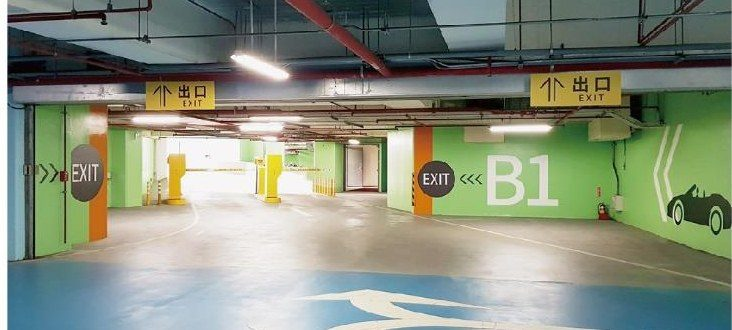
雍和園區地下停車場
照片準備中
林口機一平面停車場
照片準備中
石牌國小地下停車場

社子國小地下停車場

進安公園地下停車場
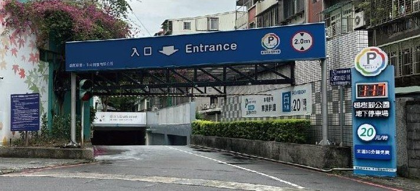
楓樹腳公園地下停車場
照片準備中
同興平面停車場
照片準備中
台64橋下平面停車場
照片準備中
水碓三路平面停車場
照片準備中
新五平面停車場
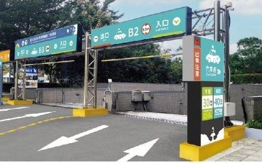
國立臺灣科學教育館地下停車場
照片準備中
合安路停車場
照片準備中
義學立體停車場
照片準備中